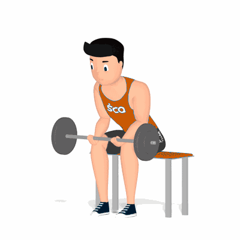

Flexão de Punho

Exercício para fortalecimento e hipertrofia dos músculos dos antebraços, com enfoque aos músculos flexores do punho.
Ficha Técnica
Tipo: Musculação
Grupo Muscular: Antebraço
Aparelho: Nenhum
Músculos: Nenhum
Como realizar
- Sente em um banco ou prancha;
- Realize a pegada em supinação, posicione os braços sobre as pernas;
- Pulsos à frente dos joelhos, manter a coluna juntamente a cabeça alinhadas;
- Braços estabilizados, levante a barra com a contração dos músculos dos antebraços, em seguida, realize a extensão;
- Repita os movimentos.
 RC STORE
RC STORE